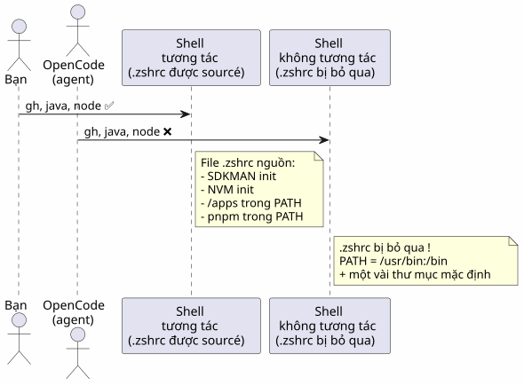
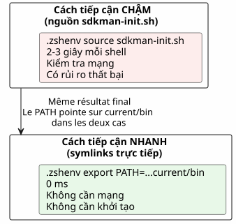
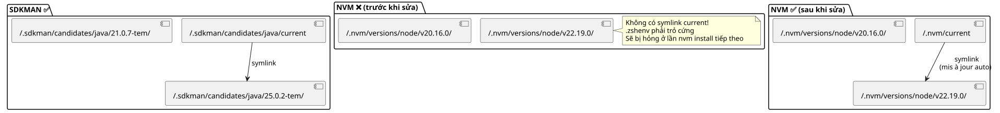
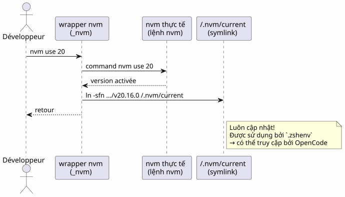
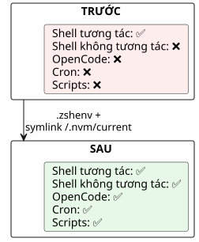

OpenCode và PATH không đầy đủ: vì sao các công cụ của bạn không có trong shell của agent
Đăng ngày 21 April 2026
- Bối cảnh: một agent mù trong một thế giới của các công cụ
- Giải phẫu bug: hai shell, hai thế giới
- Thủ phạm:
.zshrcđối với `.zshenv - Chẩn đoán từng bước
- Giải pháp:
.zshenv+ các đường dẫn chính xác - Trường hợp NVM: khi trình quản lý phiên bản quên để lại dấu vết
- Bảng tổng kết các đường dẫn
- Các bẫy và biện pháp giảm thiểu
- Bài học kinh nghiệm
- Kiểm tra cuối cùng
- Liên kết
Bạn khởi chạy OpenCode trong terminal của mình, mọi thứ đều hoạt động. Agent cố gắng thực hiện một`gh`— không tìm thấy. Một`java -version`— vắng mặt. Một`node`— không nơi nào cả. Tuy nhiên, những công cụ này thực sự hiện diện trong shell của bạn. Vấn đề là gì? OpenCode khởi chạy các shellkhông tương tácnhững người không bao giờ đọc`.zshrc`. Dưới đây là cách chẩn đoán và khắc phục điều này một cách chuẩn xác.
- mục lục
-
[]
Bối cảnh: một agent mù trong một thế giới của các công cụ
Đó là một tối thứ Ba. Tôi vừa mới cài đặthttps://opencode.ai[OpenCode], tác nhân AI hứa hẹn sẽ thay đổi cách tôi lập trình. Bài kiểm tra đầu tiên: yêu cầu nó liệt kê các kho lưu trữ GitHub của tôi.
$ opencode
> Utilise gh pour lister mes repos
❌ bash: gh: command not foundKỳ lạ.`gh`đã hoạt động hoàn hảo trong terminal của tôi. Tôi đang thử một cách khác:
> Vérifie la version de Java
❌ bash: java: command not foundSau đó:
> Lance le build Gradle
❌ bash: gradle: command not foundJava, Gradle, Node,gh— mọi thứ đều vô hình đối với đặc vụ. Còn terminal của tôi thì nhìn thấy tất cả. Như thể đặc vụ và tôi đang sống trong hai thế giới song song.
Tôi đã mất hàng giờ để hiểu. Hàng giờ đồng hồ`echo $PATH`, de which java, với sự thất vọng ngày càng tăng. Cuối cùng tôi hiểu ra rằng vấn đề không nằm ở các công cụ — mà là ở cáishell. OpenCode, giống như mọi agent khởi chạy các tiến trình con, hoạt động trong các shellskhông tương tác. Và Zsh, trong các shell đó, đơn giản là bỏ qua your.zshrc`Vui lòng cung cấp văn bản tiếng Pháp cần dịch.
Sau đây là câu chuyện chi tiết về quá trình chẩn đoán, cách giải quyết và bài học mà tôi đã rút ra. Nếu bạn đang sử dụng một agent AI — OpenCode, Aider, Cursor, hoặc thậm chí là các scripts cron — vấn đề này sớm muộn gì cũng sẽ xảy ra với bạn.
Giải phẫu bug: hai shell, hai thế giới
Khi bạn mở một terminal, Zsh xử lý nó như một shelltương tác. Nó tải`.zshrc`, nơi khởi tạo tất cả mọi thứ: SDKMAN, NVM, pnpm, các alias, và prompt xinh xắn của bạn. Môi trường của bạn đã hoàn tất.
Nhưng khi OpenCode thực thi một lệnh, nó không khởi chạy một terminal tương tác. Nó khởi chạy một shellkhông tương tác— một shell tác vụ, không có con người phía sau màn hình. Và Zsh, trong ngữ cảnh này, bỏ qua`.zshrc`. Anh ấy chỉ đọc`.zshenv`Vui lòng cung cấp nội dung cần dịch.
Tại sao sự phân biệt này lại tồn tại? Bởi vì một shell không tương tác được thiết kế để thực thi các script, chứ không phải để phục vụ người dùng là con người. Việc tải các alias, prompt và completion vào một script chạy ngầm sẽ là một sự lãng phí. Vấn đề là PATH của bạn — thông tin quan trọng nhất để tìm các tệp thực thi — thường được khởi tạo trong`.zshrc`, không nằm trong`.zshenv`Vui lòng cung cấp văn bản cần dịch.

Gốc rễ của vấn đề:Zsh chỉ source .zshrc cho các shell tương tác. OpenCode, giống như mọi tác nhân AI khởi chạy các tiến trình con, sử dụng các shell không tương tác. Những shell này chỉ đọc`.zshenv`Vui lòng cung cấp văn bản tiếng Pháp cần dịch.
Thủ phạm: .zshrc đối với `.zshenv
Zsh cóbốn tệp khởi tạo, mỗi người với một vai trò cụ thể. Đó là một thiết kế thanh thoát — nhưng đó cũng chính là mấu chốt của vấn đề:
Tệp |
Nguồn khi nào |
Vai trò |
Thay đổi PATH? |
|
Luôn luôn(tương tác + không tương tác + đăng nhập) |
Các biến môi trường thiết yếu, PATH |
✅ Có — đó là chỗ của ANH ẤY/CÔ ẤY |
|
Chỉ dành cho login shells |
Các lệnh chậm (một lần mỗi phiên) |
Có thể |
|
Chỉ dành cho shell tương tác |
Bí danh, prompt, hoàn tất, công cụ tương tác |
❌ Không dành cho các biến quan trọng |
|
Shell đăng nhập (sau |
Tin nhắn chào mừng, hoàn tất |
Hiếm khi |
Bảng này đưa ra một gợi ý, nhưng cần phải hiểu nó một cách sâu sắc. Hãy coi nó như những căn phòng trong một ngôi nhà:
-
`.zshenv`làsảnh chờ— tất cả mọi người đều đi qua đây, dù là khách hay cư dân. Nếu bạn đặt thứ gì đó ở đây, mọi shell đều có thể nhìn thấy.
-
`.zshrc`là cáiphòng khách— chỉ những cư dân (shell tương tác) mới được vào trong. Những khách ghé thăm (shell không tương tác) sẽ ở lại sảnh.
-
.zprofileet `.zlogin`là các thành phần chuyên dụng cho các login shell (ví dụ như khi bạn kết nối qua SSH).
Bi kịch ở chỗ là hầu hết chúng ta đều đặt PATH ở trong phòng khách. Còn tác nhân AI thì lại không bao giờ được phép bước vào đó.
Vấn đề thông qua một sơ đồ:

Khi bạn mở một terminal, Zsh ở chế độ tương tác: nó đọc`.zshrc`, mọi thứ đều hoạt động. Khi OpenCode khởi chạy một shell để thực thi một lệnh, Zsh ở chế độ không tương tác: nó bỏ qua`.zshrc`, chỉ đọc`.zshenv`. Et si `.zshenv`không tồn tại hoặc không chứa PATH — đó là một vùng hoang mạc.
|
Tại sao Zsh lại làm vậy?Đây là một lựa chọn thiết kế kế thừa từ Unix. Một shell không tương tác phải lànhanh et có thể tái lập. Việc tải các alias, các prompt có màu và các khởi tạo nặng của SDKMAN trong một script cron hoặc một agent AI sẽ chậm và dễ lỗi. Do đó, việc phân chia là hợp lý:`.zshenv`cho những phần thiết yếu (biến, PATH),`.zshrc`cho sự tiện lợi (aliases, prompt, complétons). Vấn đề xảy ra khi chúng ta đưa những thứ thiết yếu vào phần tiện lợi. |
Chẩn đoán từng bước
Trước khi sửa, cần phải hiểu chính xác điều gì còn thiếu. Đây là một phương pháp chẩn đoán có thể tái lập — hãy lưu nó vào mục yêu thích nếu bạn làm việc với các tác nhân AI.
1. Kiểm tra PATH của agent
Chúng ta so sánh những gì terminal tương tác của bạn nhìn thấy với những gì một shell không tương tác nhìn thấy — tức là những gì OpenCode nhìn thấy.
# Dans votre terminal interactif (tout fonctionne)
echo $PATH | tr ':' '\n' | grep -v '^/usr' | sortKết quả điển hình:
/home/cheroliv/apps
/home/cheroliv/.nvm/versions/node/v22.19.0/bin
/home/cheroliv/.sdkman/candidates/java/current/bin
/home/cheroliv/.sdkman/candidates/gradle/current/bin
/home/cheroliv/.local/share/pnpm
/home/cheroliv/.local/binBây giờ, hãy mô phỏng những gì agent nhìn thấy — một shell không tương tác:
# Shell non-interactif : pas de .zshrc
zsh -c 'echo $PATH' | tr ':' '\n' | grep -v '^/usr' | sortKết quả:
/home/cheroliv/.local/binNăm trên sáu con đường đã biến mất.Agent bị tước đi 83% môi trường của mình. Việc này giống như thể bạn được yêu cầu nấu ăn mà thiếu đi một nửa dụng cụ — bạn có thể đun sôi nước, nhưng không thể làm gì nhiều hơn thế.
|
Lệnh`zsh -c 'echo $PATH'`là của bạncông cụ chẩn đoán số 1. Nếu một công cụ mà bạn sử dụng hàng ngày không có trong kết quả, tác nhân AI của bạn cũng sẽ không thể nhìn thấy nó. Hãy kiểm tra nó trước và sau mỗi lần sửa đổi của`.zshenv`Vui lòng cung cấp nội dung cần dịch. |
2. Xác định những gì có trong .zshrc nhưng không có trong `.zshenv
Bây giờ, chúng ta tìm kẻ thủ ác trong`.zshrc`. Chúng ta lọc các dòng có đề cập đến các công cụ của mình:
grep -n 'apps\|SDKMAN\|NVM\|PNPM\|PATH' ~/.zshrcĐiển hình, ta tìm thấy:
119: PATH="/usr/bin/python3:$HOME/apps:$PATH" # ← pas exporté !
171: export NVM_DIR="$HOME/.nvm"
172: [ -s "$NVM_DIR/nvm.sh" ] && \. "$NVM_DIR/nvm.sh" # ← NVM init
176: nvm use --lts --silent # ← active une version
179: export PNPM_HOME="/home/cheroliv/.local/share/pnpm"
187: export SDKMAN_DIR="$HOME/.sdkman"
188: [[ -s "$HOME/.sdkman/bin/sdkman-init.sh" ]] && source "$HOME/.sdkman/bin/sdkman-init.sh"Tất cả những điều đó làvô hìnhcho OpenCode. Và cái`PATH`của dòng 119 thậm chí còn không`export`é — nó không bao giờ rời khỏi shell hiện tại. Đây là một chi tiết kỹ thuật quan trọng: một biến không có`export`vẫn mang tính cục bộ trong shell định nghĩa nó. Các shell con — như những shell được chạy bởi OpenCode — không bao giờ kế thừa nó.
3. Kiểm tra xem .zshenv có tồn tại không
cat ~/.zshenv 2>/dev/null || echo "FICHIER ABSENT"Nếu câu trả lời là « FICHIER ABSENT », thì đó chính là lúc mọi thứ được quyết định.
Giải pháp: .zshenv + các đường dẫn chính xác
Chiến lược này đơn giản, nhưng đòi hỏi sự chính xác: đặt vào trong`.zshenv` duy nhấtcác đường dẫn thiết yếu, mà không nguồn hóa các script khởi tạo nặng nề. Chúng ta không di chuyển`.zshrc`trong`.zshenv`— chúng ta trích xuất những nội dung chính.
Tạo .zshenv với tất cả các đường dẫn thiết yếu
`.zshenv`là cáichỉ một tệpmà Zsh đảm bảo sẽ source trongtất cảcác ngữ cảnh. Đó là nơi PATH cần được đặt vào.
export SDKMAN_DIR="$HOME/.sdkman"
export NVM_DIR="$HOME/.nvm"
export PNPM_HOME="$HOME/.local/share/pnpm"
export PATH="$HOME/apps:$HOME/.sdkman/candidates/java/current/bin:$HOME/.sdkman/candidates/gradle/current/bin:$HOME/.nvm/current/bin:$PNPM_HOME:$HOME/.local/bin:$HOME/.local/share/JetBrains/Toolbox/scripts:/usr/bin/python3:$PATH"|
Chúng ta sử dụng`$HOME/.nvm/current/bin`và không`$HOME/.nvm/versions/node/v22.19.0/bin`. Lý do là: các phiên bản Node thay đổi. Một đường dẫn cố định sẽ trở nên sai ở lần tiếp theo`nvm install`. Chi tiết hơn trong phần tiếp theo. |
Tại sao không dùng source sdkman-init.sh trong .zshenv?
Cách tiếp cận hấp dẫn nhất sẽ là chỉ đơn giản tái hiện trong`.zshenv`những gì chúng ta làm trong`.zshrc`— nạp các script khởi tạo. Chúng tacó thểcó thể bị cám dỗ để làm:
# ❌ MAUVAISE IDÉE
[[ -s "$HOME/.sdkman/bin/sdkman-init.sh" ]] && source "$HOME/.sdkman/bin/sdkman-init.sh"Các vấn đề:
-
ChậmHãy cung cấp văn bản cần dịch.`sdkman-init.sh`thực hiện phân giải mạng và kiểm tra ở mỗi shell. Trong một shell không tương tác, đây là một chi phí không cần thiết.
-
Hàng dễ vỡ: SDKMAN mong đợi một ngữ cảnh tương tác. Quá trình khởi tạo của nó có thể thất bại trong im lặng trong một pipe hoặc một sub-shell.
-
Vô ích: SDKMAN đặt các ứng dụng ứng viên của mình trong`~/.sdkman/candidates/<tool>/current/bin`— các symlink ổn định trỏ đến phiên bản đang hoạt động. Chúng ta có thể sử dụng chúngtrực tiếpVui lòng cung cấp văn bản cần dịch.
Cách tiếp cận đúng: bỏ qua việc khởi tạo SDKMAN và trỏ trực tiếp đến các symlinks`current`. Đó là chìa khóa của toàn bộ giải pháp:sử dụng cấu trúc tệp làm hợp đồng, thay vì mã khởi tạoHãy cung cấp nội dung cần dịch.

Trường hợp NVM: khi trình quản lý phiên bản quên để lại dấu vết
Vấn đề NVM
Đây là nơi cuộc điều tra đã dẫn tôi đi xa nhất. SDKMAN có một thiết kế thanh thoát: khi chúng ta thực hiện`sdk install java 25.0.2-tem`, nó tạo một symlink:
~/.sdkman/candidates/java/current -> ~/.sdkman/candidates/java/25.0.2-temSymlink này làluôn cập nhật. Di chuột lên đó trong`.zshenv`và bạn được bảo vệ, bất kể sử dụng shell nào. Thật tuyệt vời.
Còn NVM thì không tạokhông có gìđiện thoại. Không có symlink`current`. Không có điểm neo ổn định. Chúng ta phải trỏ đến một đường dẫn được đánh phiên bản cố định, trông như thế này:
~/.nvm/versions/node/v22.19.0/bin/nodeHẹn gặp lại lần tới`nvm install 24`, đường dẫn này đã chết. Của bạn`.zshenv`sẽ trỏ đến một phiên bản không còn là phiên bản hoạt động. Đó là một quả bom hẹn giờ.
|
Tại sao NVM lại làm như vậy?NVM hoạt động bằng cách thay đổi động PATH mỗi khi`nvm use`. Nó được thiết kế cho những nhà phát triển thường xuyên thay đổi phiên bản, trong một shell tương tác. Symlink`current`không nằm trong các thông số kỹ thuật ban đầu — đó là một thiếu sót trong thiết kế mà chúng tôi sẽ tự khắc phục. |

Giải pháp: tạo symlink current cho NVM
Vì NVM không làm điều đó, nên chúng ta sẽ tự làm. Nguyên lý tương tự như SDKMAN — một symlink`current`luôn trỏ đến phiên bản đang hoạt động. Chúng ta tạo nó một lần, sau đó tự động hóa để nó tự cập nhật.
# Créer le symlink initial
ln -sfn "$HOME/.nvm/versions/node/v22.19.0" "$HOME/.nvm/current"Hiện tại, trong`.zshenv`, chúng ta sử dụng:
$HOME/.nvm/current/binThay vì:
# ❌ Chemin en dur — cassé au prochain changement de version
$HOME/.nvm/versions/node/v22.19.0/binTự động hóa việc cập nhật symlink
Một symlink sẽ không có giá trị nếu nó không tự cập nhật. Symlink`current`phải được cập nhật khi chúng ta thực hiện`nvm use` ou nvm install. Giải pháp: mộtwrapper— một hàm bao bọc lệnh thực sự`nvm`và cập nhật symlink sau mỗi lần gọi.
# À la fin de .zshrc, APRÈS le chargement de NVM
nvm use --lts --silent
ln -sfn "$(nvm_version_path "$(nvm current)")" "$NVM_DIR/current"
_nvm() {
command nvm "$@"
local rc=$?
ln -sfn "$(nvm_version_path "$(nvm current)")" "$NVM_DIR/current"
return $rc
}
alias nvm='_nvm'Cách thức hoạt động chi tiết:

Wrapper`_nvm`gọi lệnh thực tế`nvm`, sau đó cập nhật symlink. Bí danh`nvm='_nvm'`đảm bảo rằng khi nhập`nvm`, chúng ta đi qua wrapper. Và khi khởi tạo shell, chúng ta cũng làm tương tự sau đó`nvm use --lts`Vui lòng cung cấp văn bản cần dịch.
|
`nvm_version_path`là một hàm nội bộ của NVM dùng để phân giải đường dẫn đầy đủ của một phiên bản. Điều này giúp tránh việc phải xây dựng lại đường dẫn một cách thủ công. |
Bảng tổng kết các đường dẫn
Trước khi chuyển sang các cạm bẫy, một bản tóm tắt trực quan về sự thay đổi. Ở bên trái, những gì bạn đã có (tất cả trong`.zshrc`, vô hình đối với tác nhân). Ở bên phải, những gì bạn đang có hiện nay (các đường dẫn thiết yếu trong`.zshenv`, hiển thị ở mọi nơi).
| Công cụ | Trước (chỉ .zshrc) | Sau (.zshenv + symlink) | Có hiển thị bởi OpenCode không? |
|---|---|---|---|
|
PATH không được export trong .zshrc |
`$HOME/apps`trong .zshenv |
✅ |
SDKMAN Java |
`sdkman-init.sh`được source trong `.zshrc |
`$HOME/.sdkman/candidates/java/current/bin`trong .zshenv |
✅ |
SDKMAN Gradle |
`sdkman-init.sh`được nạp trong `.zshrc |
`$HOME/.sdkman/candidates/gradle/current/bin`trong .zshenv |
✅ |
NVM Node |
`nvm use --lts`trong .zshrc |
`$HOME/.nvm/current/bin`trong .zshenv (symlink) |
Văn bản cần dịch không được cung cấp. Vui lòng gửi đoạn văn bản tiếng Pháp cần dịch. |
pnpm |
`$PNPM_HOME`trong `.zshrc |
`$PNPM_HOME`trong .zshenv |
✅ |
JetBrains Toolbox |
Tự động thêm bởi Toolbox vào `.zshrc |
`$HOME/.local/share/JetBrains/Toolbox/scripts`trong .zshenv |
✅ |
Python 3 |
`/usr/bin/python3`trong PATH .zshrc |
Một cách rõ ràng trong .zshenv |
Vui lòng cung cấp văn bản tiếng Pháp cần dịch. |
Các bẫy và biện pháp giảm thiểu
Không phải mọi thứ đều hoàn hảo với cách tiếp cận này. Dưới đây là những vấn đề tôi đã gặp phải và cách khắc phục chúng.
| Bẫy | Mô tả | Giảm thiểu |
|---|---|---|
PATH bị trùng lặp |
Nếu |
`.zshenv`được lấy nguồntrước.zshrc. Cả hai đều được đọc trong một shell tương tác. PATH có thể bị trùng lặp. Điều này chỉ mang tính thẩm mỹ, không ảnh hưởng đến chức năng. Để tránh điều này: chỉ đặt vào .zshenv những đường dẫn không có trong PATH mặc định. |
NVM : phiên bản cố định trong `.zshenv |
Đặt`~/.nvm/versions/node/v22.19.0/bin`cứng trở nên sai ở lần tiếp theo`nvm install` |
Sử dụng symlink`$HOME/.nvm/current/bin`+ wrapper`_nvm`trong `.zshrc |
SDKMAN : source |
Chậm, mong manh, vô dụng trong một shell không tương tác |
Sử dụng các symlinks`candidates/<tool>/current/bin`trực tiếp |
Thiếu bí danh sau khi sửa đổi |
Wrapper`nvm='_nvm'`trong |
Khởi động lại shell hoặc`source ~/.zshrc` |
OpenCode không nhìn thấy các thay đổi |
Agent đã khởi chạy các sous-shell của mình với tệp |
Khởi động lại OpenCode sau khi sửa đổi `.zshenv |
.zshenv quá tải |
Đặt các hàm nặng hoặc các khởi tạo tương tác vào `.zshenv |
.zshenv = chỉ các biến môi trường + PATH. Không có`source`, không có các hàm nặng, không có các prompt. |
Bài học kinh nghiệm
-
.zshrc` mang tính tương tác,
.zshenvmang tính phổ quát— Nếu một biến cần tồn tại trong tất cả các shell (tác nhân AI, cron, script, IDE), nó sẽ nằm trong`.zshenv`Phòng khách rất thoải mái, nhưng sảnh vào là nơi duy nhất mà mọi người đều đi qua. -
Các trình quản lý phiên bản không giống nhau— SDKMAN tạo các symlinks`current`theo thiết kế. NVM thì không. Bạn phải bù đắp thiếu sót này một cách thủ công. Đây là một bài học quan trọng: trước khi cấu hình
PATHcủa bạn, hãy kiểm tra xem trình quản lý của bạn có cung cấp một điểm neo ổn định hay không. -
Không source các init scripts trong
.zshenv—`sdkman-init.sh et `nvm.sh`được thiết kế cho shell tương tác. Chúng chậm và dễ lỗi trong ngữ cảnh không tương tác. Các symlinks`current`là đủ và tức thời. -
Luôn kiểm tra trong shell không tương tác—`zsh -c 'echo $PATH'`mô phỏng chính xác những gì một agent nhìn thấy. Đây là bài kiểm tra xác thực. Nếu không có bài kiểm tra này, bạn sẽ không biết liệu cấu hình của mình có hoạt động cho các agent hay không.
-
Wrapper pattern có thể tái sử dụng— Cùng một pattern`_nvm`+`alias nvm='_nvm'`áp dụng cho bất kỳ công cụ nào thay đổi PATH một cách linh động mà không để lại dấu vết ổn định. Đây là một công cụ nữa trong hộp ý tưởng của bạn.

Kiểm tra cuối cùng
Sau khi tạo`.zshenv`và symlink NVM, hãy xác nhận rằng mọi thứ hoạt động bình thường — trong cả hai ngữ cảnh:
# Shell interactif (votre terminal)
gh --version && java -version && node --version# Shell non-interactif (simulation OpenCode)
zsh -c 'gh --version && java -version && node --version'Cả hai đều phải thành công. Nếu có, tác nhân AI của bạn sẽ thấy các công cụ giống như bạn. Nếu không, hãy quay lại bước chẩn đoán từng bước — có khả năng bạn đã quên một đường dẫn hoặc symlink NVM chưa được cập nhật.
|
Tự động hóa bài kiểm tra này.Hãy thêm bước kiểm tra này vào một script healthcheck mà bạn chạy sau mỗi lần cập nhật các công cụ của mình. Một`zsh -c 'which java && which node && which gh'`trong CI, đó là một sự đảm bảo chống lại những điều bất ngờ. |
Vui lòng cung cấp văn bản cần dịch. Một shell không tương tác giống như một vị khách lặng lẽ: nó chỉ đọc những gì được hiển thị trên cánh cửa ra vào. Nếu PATH nằm ở trong phòng khách, nó sẽ không bao giờ nhìn thấy. Vui lòng cung cấp nội dung cần dịch.
Liên kết
Tài liệu chính thức
-
Tài liệu Zsh: Các tệp khởi chạy— Tài liệu tham khảo chính thức về các tệp khởi tạo của Zsh. Đây là nơi mọi thứ được giải thích, mặc dù chúng ta thường hay quên.
-
OpenCode: cấu hình— Cách cấu hình OpenCode và môi trường thực thi của nó.
Các công cụ được đề cập
-
NVM trên GitHub— Node Version Manager. Trình quản lý phiên bản Node.js.
-
SDKMAN — trang web chính thức— SDKMAN! Trình quản lý phiên bản cho JVM (Java, Kotlin, Gradle…)
-
SDKMAN : cài đặt— Hướng dẫn cài đặt SDKMAN.
-
gh` — GitHub CLI— Công cụ dòng lệnh GitHub, không thể thiếu cho mọi nhà phát triển.
-
Gradle — trang web chính thức— Hệ thống build mà chúng ta cài đặt thông qua SDKMAN.
-
pnpm — trang web chính thức— Trình quản lý gói Node.js nhanh chóng và tiết kiệm không gian.
-
JetBrains Toolbox— Trình quản lý IDE JetBrains, trình thêm các tập lệnh của nó vào PATH.
Để tìm hiểu thêm
-
Zsh dotfiles: một hướng dẫn chi tiết— Bài viết chuyên sâu về quản lý dotfiles Zsh.
-
Zsh trên ArchWiki— Một trong những tài liệu cộng đồng tốt nhất về Zsh.
-
Các vấn đề NVM trên GitHub— Để xem các thảo luận xoay quanh `symlink`current`và các vấn đề về PATH.